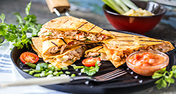

Quesadilha
Contexto Histórico
A quesadilla – ou quesadilha em português, surgiu da criatividade. Pequenos pães de milho, queijo e açúcar eram vendidos nas ruas como sobremesa. Eles tinham formas grandes e, às vezes, estavam cobertos de mel ou frutas. Esses doces eram chamados de quesadillas. Eram feitos de trigo e cozidos com manteiga. Anos mais tarde, já que a tortilha de trigo é muito comum no México, outras receitas foram feitas com o mesmo ingrediente. Foi o caso da quesadilla, que nada mais que é uma tortilha recheada de queijo – ou queso em espanhol.
Mas não é só isso. A quesadilla é grelhada após estar pronta para dar o toque final. A preparação mais comum é feita com a tortilha amassada com sal e banha de porco, ou farinha de trigo com manteiga. Logo se acrescenta o queijo e outros ingredientes e dobra-se no formato triangular, esquentando a iguaria numa chapa ou frigideira até que o queijo derreta. Dessa forma, a quesadilla fica crocante por fora e com recheio cremoso por dentro. Usar farinha de milho também é bem comum.

Ingredientes:
4 Tortilla
200 g de queijo prato
2 Tomates sem sementes picado
100 g de milho (1/2 lata)
15 g de Cebolinha picada (3 colheres de sopa)
MODO DE PREPARO:
Em uma frigideira desligada coloque uma tortillaPor cima coloque um pouco do queijo prato (é importante não colocar muito nas bordas, pois pode escorrer muito para fora), o tomate picado, o milho, a cebolinha e feche com a outra tortilla
Ligue o fogo e deixe de baixo a médio, quando a tortilla dourar de um lado vire com muito cuidado com ajuda de uma espátula
Deixe dourar do outro lado também
Repita o processo para fazer a outra tortillha